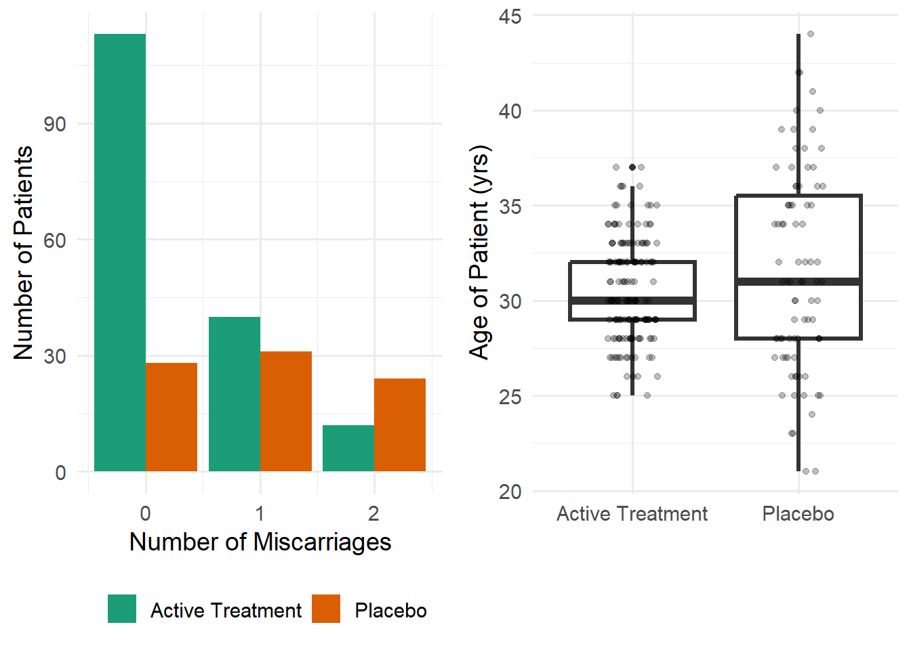
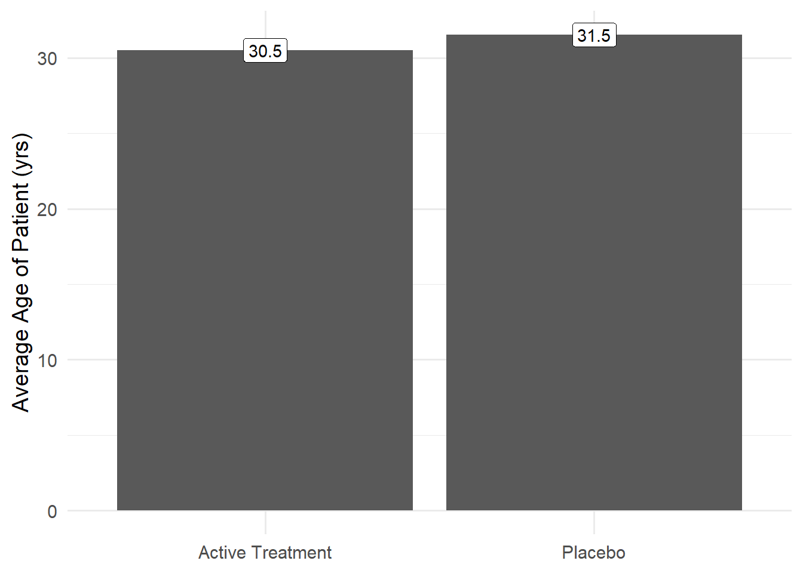
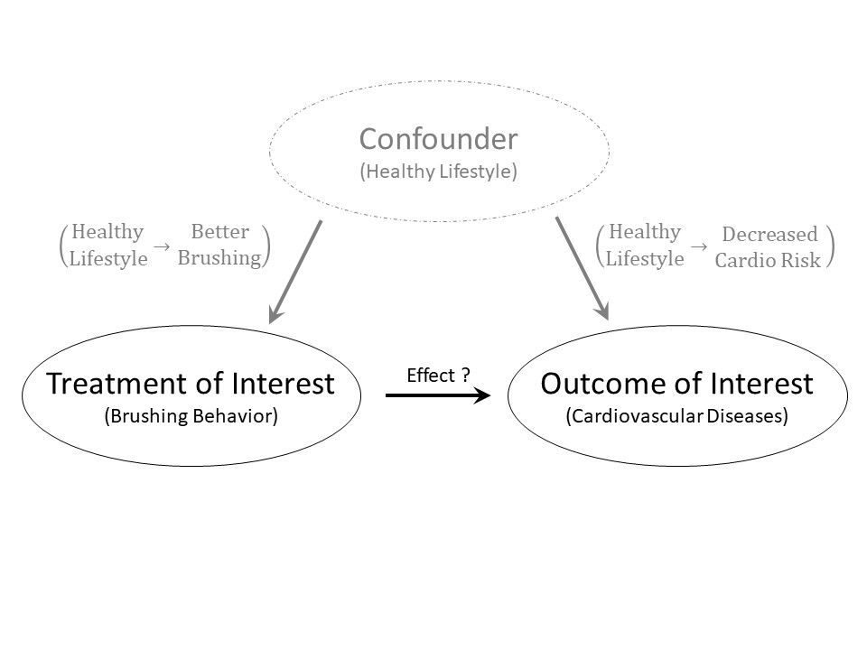

1 Overview of the Statistical Process
Research is about telling a story, and good data presentation and statistical inference can help tell that story in a compelling way. This chapter cannot replace an introductory course on statistical analysis. We strive to give practical advice for data storage, presentation, and analysis while presenting a framework for inference; it is within this context that we review terminology fundamental to our study of statistical models in the biological sciences.
1.1 Overview of Drawing Inference
Every research question posed is trying to characterize a population.
Definition 1.1 (Population) The collection of subjects we would like to say something about.
It is often impossible (or impractical) to observe the entire population. Instead, we make observations on a subset of the population; this smaller group is known as the sample.
Definition 1.2 (Sample) The collection of subjects for which we actually obtain measurements (data).
Note
We acknowledge the weight of the term “subject” when discussing human participants. Medical research has not been immune to unjust practices exploiting marginalized groups within society. While the term persists in the description of research practices in general, we opt for the term “participants” when describing those individuals who actually participate in a study.
While the semantics may seem a small component, this small shift adds a human element to the analysis. It is important to remember that each observation within the data has a story, and when those stories represent the lives of others, they deserve our full respect.
For each subject within the sample, we obtain a collection of measurements, which form our data. This could be the result, for example, of a survey, examination of medical records, or a prospective study which follows subjects for a lengthy period of time. The goal of statistical modeling is to use the sample (the group we actually observe) to say something about the population of interest (the group we wish we had observed); this process is known as statistical inference and is illustrated in Figure 1.1.
Definition 1.3 (Statistical Inference) The process of using a sample to characterize some aspect of the underlying population.
1.2 Data Storage
Each measurement, or piece of information, you record for a subject is a different variable.
Definition 1.4 (Variable) A measurement, or category, describing some aspect of the subject.
In order to conduct analysis, it is best to adhere to “tidy data principles” (Wickham 2014) when storing data. In brief:
- Each column contains a unique variable.
- Each record (or row in the data set) corresponds to a different observation of the variable(s). If each subject is only measured once (a single survey for each subject, for example), each record will correspond to a different subject. If, on the other hand, each subject is measured multiple times (the same survey is given prior to an appointment and at a specified follow-up period, for example), there may be multiple records which correspond to the same subject, but each record corresponds to a unique observation.
- If you have multiple data sets, there should be a variable in the table that allows the various tables to be linked (subject identifier). For larger more complex studies, for example, you may have one table that has the demographic information of subjects and a separate table which contains the lab results for the subjects.
- The first row in the data set should have the names of each variable.
The above description eliminates a common method of data storage — placing different groups in different spreadsheets. All observations should be stored together. The first few records of a hypothetical data set are illustrated in Table 1.1.
| Subject ID | Education | Age (yrs) | Parity | Number of Miscarriages | Treatment Group |
|---|---|---|---|---|---|
| 1089 | 0-5yrs | 28 | 6 | 0 | Active Treatment |
| 1160 | 0-5yrs | 36 | 1 | 0 | Active Treatment |
| 1025 | 0-5yrs | 34 | 6 | 0 | Active Treatment |
| 1035 | 0-5yrs | 32 | 4 | 1 | Active Treatment |
| 1112 | 6-11yrs | 32 | 3 | 0 | Active Treatment |
| 1030 | 6-11yrs | 33 | 4 | 1 | Active Treatment |
| 1159 | 0-5yrs | 26 | 6 | 2 | Placebo |
| 1207 | 0-5yrs | 42 | 1 | 0 | Placebo |
| 1179 | 0-5yrs | 39 | 6 | 0 | Placebo |
| 1014 | 0-5yrs | 34 | 4 | 0 | Placebo |
| 1195 | 6-11yrs | 35 | 3 | 1 | Placebo |
| 1170 | 6-11yrs | 36 | 4 | 1 | Placebo |
Once your data has been placed in a spreadsheet, it should be kept separate from the analysis. Any changes to the data should be done using your analysis file so that those changes are clearly documented alongside the analysis. While it may be easy, it is poor practice to include graphics and numeric summaries in the same spreadsheet as the data. If you want your data to be portable (easily opened by any spreadsheet or analysis software package), save your data as a comma separated file (CSV).
1.3 Tabular Data Presentation
If you have several variables you want to summarize, this is probably best done using a table. For example, you may want to summarize the demographics of the subjects in your study across each treatment group. How a variable is summarized depends on its type. Qualitative (or categorical) variables define a grouping or categorization of a subject (e.g., race, treatment group, etc.). When summarizing qualitative data, we generally report the number of subjects in each group and the corresponding percentage of the sample.
Definition 1.5 (Categorical Variable) Also called a “qualitative variable,” a measurement on a subject which denotes a grouping or categorization.
Quantitative (or numeric) variables are those measurements for which arithmetic makes sense (e.g., heart rate, age). These variables are generally summarized by reporting both a measure of location and spread; this could be mean and standard deviation or median and interquartile range.
Definition 1.6 (Numeric Variable) Also called a “quantitative variable,” a measurement on a subject which takes on a numeric value and for which ordinary arithmetic makes sense.
If you are not comparing groups of subjects, it is reasonable to report results for the entire sample. If the goal of your research is to compare groups (such as rural vs. urban residents), we typically summarize data within each group and present the comparisons side by side. Table 1.2 summarizes the data from our hypothetical study, allowing the reader to compare the treatment and placebo groups. Notice that while we might think of the number of miscarriages as being a numeric variable, when there are only a small number of possibilities, we might treat that variable as categorical for the purposes of summarizing it.
| Characteristic | Active Treatment, N = 1651 | Placebo, N = 831 |
|---|---|---|
| Education | ||
| 0-5yrs | 8 (4.8%) | 4 (4.8%) |
| 6-11yrs | 80 (48%) | 40 (48%) |
| 12+ yrs | 77 (47%) | 39 (47%) |
| Age | 30.51 (2.67) | 31.53 (5.28) |
| Parity | 2.08 (1.24) | 2.11 (1.28) |
| Number of Miscarriages | ||
| 0 | 113 (68%) | 28 (34%) |
| 1 | 40 (24%) | 31 (37%) |
| 2 | 12 (7.3%) | 24 (29%) |
| 1 n (%); Mean (SD) | ||
When reporting numerical summaries within the body of your report, it is good to keep the same format as you adopt in the table; for example, summarizing a qualitative variables with N (%).
Statistics is generally concerned with explaining the variation in a variable, and that is characterized by its distribution. When we summarize a variable, whether numerically or graphically, we are actually summarizing this distribution.
Definition 1.7 (Distribution) The pattern of variability corresponding to a set of values.
1.4 Graphical Data Presentation
As the saying goes, a picture is worth 1000 words. Each graphic you construct, however, should add value to the story you are telling. We primarily reserve graphics for conveying a message about our primary response.
Definition 1.8 (Response Variable) Also called the “outcome,” this is the primary variable of interest in the research question; it is the variable we either want to explain or predict.
As with tabular data presentation, our approach to graphical presentation depends on the type of variable being summarized. For example, while a scatter-plot is well suited for examining the relationship between two quantitative variables, side-by-side box-plots are better suited for examining the relationship between a quantitative response and a categorical predictor.
Note
Following best practices in the research community, we recommend the use of a bar chart instead of a pie chart when examining a categorical response. Bar charts are often less cluttered and more clearly communicate the same information.
Figure 1.2 illustrates two graphics (one for a qualitative and one for a quantitative response); again, in practice, your graphics should be driven by your research question.

Notice that the left panel of the graphic makes use of bar charts to compare a qualitative variable (number of miscarriages) across a second qualitative variable (treatment group). The use of color here is important because it brings out additional features that do not appear on the x- or y-axis. The right panel of the graphic makes use of box-plots (with jitter-plots overlaid) to compare a quantitative variable (age of the patient) across the qualitative variable (treatment group). One idea worth discussing here is that a graphical summary of a quantitative variable should always portray both location and spread. Notice that in the right panel in Figure 1.2, we see that the ages of patients receiving placebo are comparable (in location) to that of those receiving the active treatment; however, the variability in the ages of patients receiving placebo is much larger compared to those receiving the active treatment. Compare this to Figure 1.3, which only summarizes location with no sense of spread; while this is a popular default graphic in some software, it does not adequately allow a reader to determine the size of the effect relative to the variability in the data.

1.5 Basic Terminology for Statistical Tests
In some cases, summarizing the data numerically and graphically is sufficient for telling a compelling story. Often, however, the summaries are accompanied by a statistical analysis. Regardless of the simplicity (or complexity) of the statistical procedure, there are a few fundamental ideas which are common to all methods.
A statistic (summary of data) is a point estimate of a parameter (corresponding value in the population of interest). For example, the value 2.08 in Table 1.2 is the average number of children among those women in the study who received the active treatment; but, it estimates the average number of children among all women in the population who receive the active treatment.
Definition 1.9 (Parameter) Numeric quantity which summarizes the distribution of a variable within the population of interest. Generally denoted by Greek letters in statistical formulas.
Definition 1.10 (Statistic) Numeric quantity which summarizes the distribution of a variable within the observed sample.
Instead of estimating a parameter with this single value, we can estimate the parameter with a confidence interval (a 95% confidence interval is standard practice).
Definition 1.11 (Confidence Interval) An interval (range of values) estimate of a parameter that incorporates the variability in the statistic. The process of constructing \(k\)% confidence intervals results in them containing the parameter of interest in \(k\)% of repeated studies. The value of \(k\) is called the confidence level.
It is important to recognize that the entire interval is our estimate. In text, we generally report the point estimate with the 95% confidence interval in parentheses. For example,
The probability of a miscarriage is 0.32 (95% CI: [0.25, 0.39]) for women given the active treatment.
There are several common misinterpretations of a confidence interval; generally, these do not enter the literature because we avoid interpreting the interval directly and simply state it and discuss its implications (as above). For completeness, however, it is best to think of a confidence interval as giving all the reasonable values of the parameter based on the data observed.
While confidence intervals estimate an effect, a p-value quantifies the amount of evidence in the data against the lack of an effect.
Definition 1.12 (P-Value) The probability, assuming the null hypothesis is true, that we would observe a statistic, from sampling variability alone, as extreme or more so as that observed in our sample. This quantifies the strength of evidence against the null hypothesis. Smaller values indicate stronger evidence.
We generally report a p-value to 3 decimal places (with values less than 0.001 being written as “< 0.001”). It is best to state p-values alongside the conclusion. For example,
There is strong evidence (p < 0.001) that the active treatment reduces the risk of a miscarriage.
Caution
There are two very important things to keep in mind when examining a p-value:
- A small p-value does not imply the effect is clinically relevant/important. It simply indicates that we are able to statistically discern an effect/difference is present.
- A large p-value does not imply there is no effect/difference. It simply indicates that we cannot statistically discern the presence of an effect/difference.
For these reasons, a p-value should always be accompanied by either a confidence interval (preferred when possible) or a point estimate of the effect to allow readers to determine if the impact is clinically relevant.
When interpreting statistical results, the design of the study plays a role. In particular, we can only conclude a causal relationship when the data is from a randomized clinical trial. When your data is from an observational study, any group comparisons are subject to confounding.
Definition 1.13 (Randomized Clinical Trial) Also called a “controlled experiment,” a study in which each participant is randomly assigned to one of the groups being compared in the study.
Definition 1.14 (Observational Study) A study in which each participant “self-selects” into one of groups being compared in the study. The phrase “self-selects” is used very loosely here and can include studies in which the groups are defined by an inherent characteristic, the groups are determined according to a non-random mechanism, and each participant chooses the group to which they belong.
Definition 1.15 (Confounding) When the effect of a variable on the response is mis-represented due to the presence of a third, potentially unobserved, variable known as a confounder.
Example 1.1 (Dental Health and Cardiovascular Disease) It has been suggested that brushing your teeth twice a day for at least two minutes may lower the risk of cardiovascular diseases1.
However, most of these results are from large surveys, which are observational studies. It is quite plausible that those who take excellent care of their teeth tend to be health-conscious individuals, and health-conscious individuals are more likely to have healthy diets and exercise regularly, both of which decrease the risk of cardiovascular diseases.
In Example 1.1, being health-conscious is a confounder because it is associated with both the factor under study (brushing behavior) and the outcome of interest (cardiovascular disease); see Figure 1.4. In order to establish a causal link between brushing and the risk of cardiovascular disease, we could conduct a clinical trial in which we randomize patients to a brushing routine and then track their long-term cardiovascular health; in this design, the link between the confounder and the treatment group is broken, allowing us to make a causal conclusion. While clinical trials allow for causal conclusions, they are not always feasible or practical; observational studies allow us to add to the body of knowledge in such situations. There are some methods for addressing confounding in observational studies through statistical analysis, but such methods often require a large sample and more advanced methodology.

1.6 A Note on Codebooks
A dataset on its own is meaningless if you cannot understand what the values represent. Before you access a dataset, you should always review any available codebook.
Definition 1.16 (Codebook) Also called a “data dictionary,” a codebook provides complete information regarding the variables contained within a dataset.
Some codebooks are excellent, with detailed descriptions of how the variables were collected and appropriate units. Other codebooks give only an indication of what each variable represents. Whenever you are working with previously collected data, reviewing a codebook is the first step; and, you should be prepared to revisit the codebook often throughout an analysis. When you are collecting your own dataset, constructing a codebook is essential for others to make use of your data.